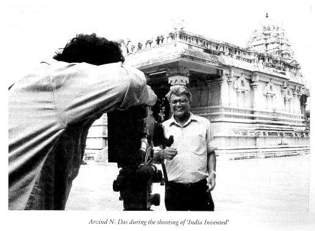
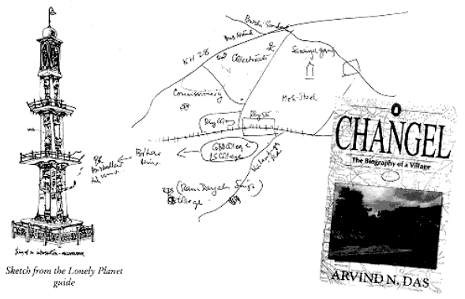

|
Biblio:
July-August 2000, p. 37-39 Arvind Narayan Das
Biblio: July-August 2000, p. 37. Critics and friends of Arvind N. Das sunk their often irreconcilable differences to pay tribute to him when his life was cut short in its prime on August 6. This was a rare occurrence in India considering the bitter divisiveness that permeates its rapidly shrinking space for intellectual pursuits. From Prime Minister Atal Behari Vajpayee, who stood at the opposite end of his political beliefs, to his comrades in the CPI(ML), Arvind received fulsome praise for his achievements as a social scientist, journalist, activist, documentary film-maker and Editor of Biblio. While he was still around, Arvind's critics, like his friends, would say much the same thing about him, though for entirely different reasons: "He refuses to grow up." Arvind's folly, in the eyes of the critics, was that late into his adult years, he continued to believe in causes he had embraced as an exceptionally gifted student at St. Stephen's College in Delhi: class struggle, the emancipation of the peasantry from feudal oppression, rights of workers, the awakening of the Dalits and so forth. In an India where the buzz words are economic reforms, globalisation and market forces, Arvind's advocacy of the wretched of the earth sounded odd to his critics: dogmatic, extremist, rhetorical, impractical or out of sync with the 'real' world For his friends, however, Arvind's "refusal to grow up" was precisely what was so endearing about his personality. Not for him the double-speak of the politician, the smooth phrases of the diplomat, the opinionated babble of the scribe or the pedestrian outpourings of the academic. He said whatever he had to say clearly, forcefully and eloquently, taking care to lend a wider perspective to each issue, a historical perspective, or a perspective of political economy Indeed, he was so deeply attached to a vibrant debate that he would sometimes willfully exaggerate a point, introduce a note of vehemence in his tone or throw in a dash of irony or sarcasm just to keep the argument going. He thrived on dissent and prospered on polemics. His favourite question was: "Forget the facts for the moment. What is the theory?" And once he had stumped his interlocutor, he would proceed to advance an hypothesis with a conspiratorial hint that he was privy to some information not available to others which would prove him right More to the point, Arvind's way of engaging in a debate was to challenge conventional wisdom, shift the dominant paradigm or alter the perspective in vouge from ed to end. Though he was firmly located on the extreme fringe of the Left, he refused to be trapped in any ideological straightjacket. He appeared to cultivate his own anarchic streak--but to call him an anarchist wouldn't be quite fair. Indeed, what held Arvind in thrall were scholars, politicians, artists, businessmen and others who chose to swim against the tide Those who knew him well were aware of the intense curiosity with which he followed the words and actions of VP Singh--Arvind was an early adherent of Mandalism but later grew disillusioned with its implementation--or of another former Prime Minister, Chandrashekhar. He had harsh comments to make on Laloo Prasad Yadav but he defended the Bihari leader tooth and nail if someone else dared to criticize him. He had much the same attitude to Jyoti Basu. For long years he had been contemptuous of the established Left parties but Bengal's Chief Minister could do little wrong in his eyes. Nothing had got him more excited than the prospect of Basu heading the government at the Centre For certain individuals Arvind swore absolute loyalty. They included, in the first place, the Marxist historian, D.D. Kosambi. The writings of Kosambi were the prime source of his inspiration for the monumental 18-part documentary on the evolution of Indian civilization that he wrote, produced and directed for Doordarshan. He also drew on the works of Romila Thapar, Irfan Habib and Barun De. Amartya Sen was yet another favourite. At one time during his student years, Arvind was the only student of the future Nobel Prize winner But Arvind's real obsession--the one that shaped his thinking, guided his written output and nourished his conversations--was his native Bihar. It can be said without exaggeration that no contemporary Indian thinker has spoken and written about the glorious past, the dismal present and potential for a great future of this state with such lofty eloquence as he did. In his eyes, Bihar was a metaphor for India itself. At a pinch, he would have deemed it to be the very centre of the universe. While he loathed its venal, caste-ridden, ineffective governance, the violent nature of its society, its decrepit intellectual and cultural life and the slothful ways of its elite, he never missed an opportunity to recall its rich cultural and spiritual legacy, the noble character of its long suffering people and the revolutionary potential of its youth. Two of his books-- The Republic of Bihar and Cbangel: The Biography of a Village--bear vivid testimony to what the state meant to him All this explains why Arvind, who had acquired an enviable reputation as an academic and a journalism both at home and abroad, was never part of the Capital's party circuit. He would have been completely out of place in this world noted for its philistine ways, its undercurrent of sleaze and its moral coarseness. He preferred to socialise with like-minded individuals, those who still valued books, nursed a social conscience, focussed on forces that shaped the lives of individuals, communities and nations and delighted in the arts of India Endowed with a free and open mind and a generous heart, Arvind answered every call for support and comfort, rushed to participate in every scheme which demanded a breath of imagination and, above all, stood by his hugely talented family and his friends. Even those of his friends who had abandoned the radicalism of the Left to seek fortune or fame in other ideological havens-or in the enclave of expediency-found him to be singularly lacking in rancour or recrimination In his last book Down and Out: Labouring under Global Capitalism, which he coauthored with Jan Bremen, the distinguished Dutch scholar, Arvind presented a bleak picture of the fate of the labourer in present times. Its central thesis is that globalisation and privatisation have pushed millions of workers to languish in squalor, poverty and misery and that no redemption is in sight for the near future. This is how the book ends: "It is a gloomy scenario, one of exclusion of a large section of the people from the fruits of productivity to which they contribute. And yet, not only work but life itself must go on and dignity and hope, protest and resistance, honour and optimism must be asserted even in these dismal conditions. The forms of such assertion may not be dramatic; they may not be based on collective solidarity; they may have a mundane everyday quality; their locus may be the habitat, the home, the locality; the resisters and the protesters may relate to each other as neighbours rather than as co- workers--nevertheless, protest and resistance go on and mobilisation and organisation are carried out in different ways. As Galileo said in another context, And yet it moves."' It is Arvind N. Das's ebullient personality, his fine intellect, his inspired indignation against all forms of sham, prejudice and oppression and, equally, his sensitivity to anything that brought cheer and grace and dignity to individuals that his friends and colleagues, especially here at Biblio, will miss for a long, long time Back to the top Biblio: July-August 2000, p. 38. He was the last of the intellectuals in the classic sense of that much-maligned term, except for one attribute: There was a remarkable absence of arrogance in his demeanour. Dr. Arvind Narayan Das shot into fame only in the late1980s after he joined The Times of India as Senior Editor, but he always had a huge fan following among students throughout North India and was adored in academic circles, especially among scholars of history and sociology. The only explanation for his most untimely death (he was merely 51) is to be found in that old adage that God calls back early those He dearly loves. This was no time to die, Arvind. God was very selfish in your case. Unlike most of his comrades, Arvind never personalised his ideological disagreements. He did not go around bad-mouthing people just because they were not in agreement with his point of view. Instead, he always tried to help, wherever he could. That probably explains why he had so many admirers cutting across ideology, age, region, religion and nation Again unlike most Marxist academics, Arvind never suffered from insecurity. Actually, he towered over his compatriots in both the depth and finesse of his intellect; he did not have to worry about being upstaged by anybody. Arvind and I grew apart over the years on the ideological front. When he joined TOI, I was still Left-leaning although my disillusionment with the organised communist movement was growing rapidly. Arvind was never part of organised communism. There was an anarchist element in him that, understandably, drew him towards what is loosely described in India as Naxalism In his student days he was an official revolutionary, swayed by the fires of Maoism that swept academia in large parts of India. Incredible as this might sound in today's apolitical epoch, Arvind contested and won the presidentship of the students' union society of St. Stephen's College, campaigning on an overt Naxalite platform. He had a capacity to mesmerise and, shortly after becoming students' union chief, succeeded in luring quite a few talented students away from studies into the backwaters of his native Bihar to practise revolution. Needless to add, like all such amateur efforts, the move to establish a revolutionary "foco" on the Cuban model in Arvind's home village, failed miserably. Most of his Stephanian compatriots returned to the mainstream in sackcloth and ashes. Some gave up politics altogether and ran into the outstretched arms of Ford Foundation or similar American- funded bodies which they had volubly denounced till just the other day. Some others like Ravindra (Lallu) Ray and Dilip Simeon continued to doggedly pursue the idealistic if impractical goal of an egalitarian society. Arvind, again unlike many of his turncoat ex-comrades, never pooh-poohed them; nor was he ever patronising about their continued commitment to a failed cause. If anything, he always supported such efforts morally and materially Having abandoned the praxis of revolution, Arvind turned to academics. He obtained a doctorate in history from Calcutta University and thereafter flitted between research institutes, both at home and abroad, spending long years at Surat. He was the blue-eyed boy of several leading historians and sociologists. I wonder why he never went into full-time teaching. He would have been as celebrated a teacher as the late Professor Sushobhan Sarkar, his son Sumit, Professor Randhir Singh or Professor Gyanendra Pandey. Arvind was gifted with a remarkable felicity of the tongue and agility of mind. These qualities enabled him to emerge rapidly as a consummate seminarist and influential columnist within a few years of his transformation into a journalist. For an academic, Arvind was remarkably lucid. His turns of phrase and pithy observations immediately enabled him to garner a large and loyal readership. Sometimes, I felt, Arvind indulged in a bit of smart writing and polemics which subdued the seriousness of his argument. But his readers seemed to enjoy that immensely  His foray into television, I always thought, was a mistake. But demonstrating rare camaraderie, he joined Dileep Padgaonkar and his long-time comrade, Anikendra Nath (Badshah) Sen in APCA. But the intellectually restless man he was, Arvind utilised his years at APCA to produce, direct and present a phenomenal 18-part television documentary, India Invented, based on the writings of his intellectual guru, the doyen of Marxist historians, Damodar Dharmanand Kosambi. I used to be a regular guest on various APCA programmes, and Arvind would urge me to watch one episode each time I visited the APCA studios. Sadly, the serial received scant publicity. I hope Arvind's friends (and I count myself among them) will get together to give it a treatment better than that which it received in his lifetime One of the least parochial Biharis I have come across, Arvind was, however, deeply committed to his native State. Apart from writing the well-known treatise, The Republic of Bihar, some years ago, Arvind contributed significantly to the State's intellectual life through his association with Patna's A. N. Sinha Institute. He had a large following in Bihar, but that did not make him a Bihar lobbyist. His liberal education and exposure across the country and abroad, especially his annual lectures in Holland, ensured that he suffered few prejudices. His mindset was so broad that it overcame the sectarianism normally associated with Marxists, particularly those of the proto-Naxalite variety But above all, as I said at the outset, Arvind was an intellectual. His mind never stopped probing. He did not confine his interests to just a few narrow spheres. I recall when I wrote one of my first sociological pieces on Hindi cinema in The Times of India, Arvind was the only senior journalist to compliment me. In fact, he took the matter up with Girilal Jain, arguing that my piece, explaining the success of Mr India, ought to have appeared on the editorial page rather than in Saturday Times, a supplement Girilalji hated. Himself a purveyor of social trends, Arvind brought his formidable reading and analytical prowess to examine evolving socio-political trends. Because he was not a dogmatist, he could communicate his ideas even to people who disagreed with his ideological matrix. That is what I call an intellectual. One doesn't have to sport a jhola, don an unkempt appearance, indulge in rank sectarianism and intensely dissect only subjects of one's own specialisation, to be conferred the honorific. An intellectual must have an ability to communicate his intelligence, engage others in dialogue through his intellect. Arvind was, in that sense, the last of this species, at least among my contemporaries Adieu, Arvind. We will really miss you. You were an agnostic and so you will dismiss this suggestion. But I will make it nevertheless. Up there, engage that Great Spirit who controls our destinies in debate and convince him that there is too much wrong that still goes on in this world to which He is blind. Given your ability for persuasive argument, He might just listen and do something that you always wanted to do in this world -- CHANDAN MITRA Back to the top Biblio: July-August 2000, p. 39.
Presents endear absents, wrote Charles Lamb. The poignant truth of these words now hits me in the solar plexus as I look at the two small but invaluable presents that Arvind Das gave me last year. They consist, simply, of a rough road map and a book. As a sociologist, Arvind was well aware of the rich literature around the magical rituals of the gift. A gift transforms its recipient by revealing to her, for a luminous moment, the 'soul' of the donor. Perhaps it is presumptuous of me to speak like this for I did not know Arvind at all well, but I do know in my bones that these objects he helped me with--book and map--show something immortal, despite my being a crabby and confirmed atheist Last year, I sought Arvind's assistance on a subject where his expertise was something of a legend--Bihar. And Arvind responded with his characteristic generosity and an infectious enthusiasm. It turned out that my father and Arvind, who knew each other well, shared common memories--memories of living in Bihar and, more particularly, of inheriting stories about the great earthquake of 1984. This was a disaster in which several members of my family died--grandfather, aunt, great-cousins--and I wanted to find out more about the town in which they had lived, not so far from the epicentre of the quake--Muzaffarpur. Arvind himself did not lose family in the earthquake but his grandfather's house in nearby Changel village came tumbling down. When his grandfather rebuilt his battered home, Arvind told me, he insisted on enormous walls two-and-a-half-feet thick--walls which could withstand death. Death, indeed, was a constant theme in our otherwise very animated conversations over the past year; and it's against the great backdrop of historical mortality that Arvind's roadmap (inset) makes acute sense. As is apparent, the map was casually drawn with Arvind's free right hand, while the other held aloft an insouciant whisky! What its bare lines lay out, however, is not just the shape of Muzaffarpur town in North Bihar but its bustling, unput-downable spirit. Muzaffarpur (population 150, 000 approx.) is dismissed with a terse note by the global Lonely Planet guide: "Apart from being a bus and train changing point on the way to the Nepal border, Muzaffarpur is of no real interest. This is a poverty ridden and agriculturally backward area." But Arvind saw the place with different eyes. This was no mere changing station. It was a destination in itself, rich with history. Before my astonished gaze, Arvind made the NH 28 roar with fumes and industrial energy with a few brisk strokes of a hastily produced ball-point. He brought to life an epoch of turmoil as the terrain of Muzaffarpur was divided between the British Collectorate and Commissionary and its opposite 'native quarter' in the Saraiya ganj and Moti Jheel areas. He took me through the manifold transformation of the college-life and education over a century as L.S. College turned into Bihar University which then morphed into B.R. Ambedkar University. In Arvind's hands, Muzaffarpur--Bihar itself--seethed with life, with change, and not just, as the 'India Survival Kit' would have it, for back-packers en route to Nepal!  When I look at the map Arvind drew, I realise that he created endless narrative possibilities in its interstices. That is why it casts a spell, and also why I think I instinctively preserved it without quite knowing why. Indeed, I see Arvind himself ironically commemorated by the Muzaffarpur monument, so sniffily labelled "thing at an intersection" (inset) by the Lonely Planet. For, as he put it to me once with an unabashed twinkle in his eye, it is 'monstrous' structures like 'the thing', as much as the great Buddhist stupa at Gaya, which represent the entire raucous, irrepressible, eternal weltanschauung of 'the Republic of Bihar'! Bihar--another name for survival down the generations. Arvind's grandfather, skilled at survival, the one who built his house as a bastion against death, is also, in a way, the hero of his second gift to me. The book entitled Changel: the Biography of a Village by Arvind. N. Das describes how he tackled "the fourth dimension of time" on his return, as a sophisticated St. Stephen's graduate, to his ancestral village after a lapse of years. "My dear Bachcha" his grandfather had written to him, "your grandmother passed away yesterday... Come to Changel if you can. Yours affectionately, Baba." And of course Arvind, or Bachcha, went, back to his roots, back to Changel...I suppose it is inevitable that, when we embark on what Arvind presciently calls "an ongoing journey through space and time", we all encounter our Changels sooner or later--our still centres of return. The difference between most of us and Arvind lies only in the startling clarity with which he perceived this truth, despite the hectic whirl of his life. In the last sentence of his book, for example, he announces without equivocation: "I belong to Changel" while the fly-leaf of my copy carries the following prophetic inscription: To Rukmini, a survivor of Mzp (as the Rlys. say) from another.* Arvind, it appears, knew that he would survive. Apart from the presents he gave me, and others, this was, I think, his own unique gift-the zestful certainty that he would surmount every mishap, including death. It is a quality that makes him-like Bihar-ultimately invulnerable and totally indestructible -- RUKMINI BHAYA NAIR *This cryptic reference to what the 'Railways say' refers to the common characterisation of Muzaffarpur (Mzp) as a mere 'junction' town where one is always on the road to elsewhere Back to the top Biblio: July-August 2000, p. 39.
of Arvind N. Das posted on H-Asia (History-Asia)website on August 8, 2000 by Walter Hauser Dear Colleagues: I am sorry to report that our friend and colleague, Arvind Narayan Das died of cardiac arrest yesterday, August 6, in Amsterdam. He was frequently in Europe and the UK, primarily at the University of Amsterdam and its Centre for Asian Studies. Among his occasional visits to the United States was that in May 1997 when he participated in the symposium on Power, Agrarian Structure, and Peasant Mobilization in Modern India at the University of Virginia. His presentation on that occasion, titled "Swami and Friend" was a wide-ranging survey of peasant activism in twentieth century India. It was that range of issues that were the primary focus of Das' scholarship together with an especially sensitive portrayal of his native Bihar, and more specifically of his north Bihar village. He was particularly candid in describing the remoteness of most urban intellectuals to the meaning of what was and wasn't happening in Bihar. For Das these observers were portrayed in his many op-ed essays in the Indian press as "the chattering classes," who knew less about Bihar than they did about Kosovo, Chechnya, or Sierra Leone. In an effort to bring a more subtle understanding to the experience of Bihar, Arvind organized an international conference on "Bihar in the World and the World in Bihar," which convened at Patna, December 16-19, 1997 under the sponsorship of the Asian Development Research Institute (ADRI) of Patna and the European Science Foundation of Paris. The volume emerging from that conference, edited by Arvind Das, is currently in press with Manohar Publishers of New Delhi. Arvind Das was a man of many parts. Beyond the eleven books which he either wrote or edited he was in every sense an activist and a publicist. We have lost a friend and a colleague of vast energy and extraordinary intellectual and political vitality. He will be missed not only in India, but in the world beyond Patna and Delhi. We will especially miss the decency he brought to his work and to all of his associations, just as we will miss the insights of the human condition he conveyed in everything he wrote. -- WALTER HAUSER Back to the top Biblio 2000 OR Table of Contents of South Asia Journals Webber -
Philip McEldowney |